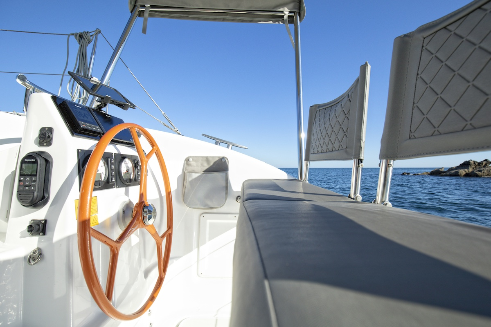
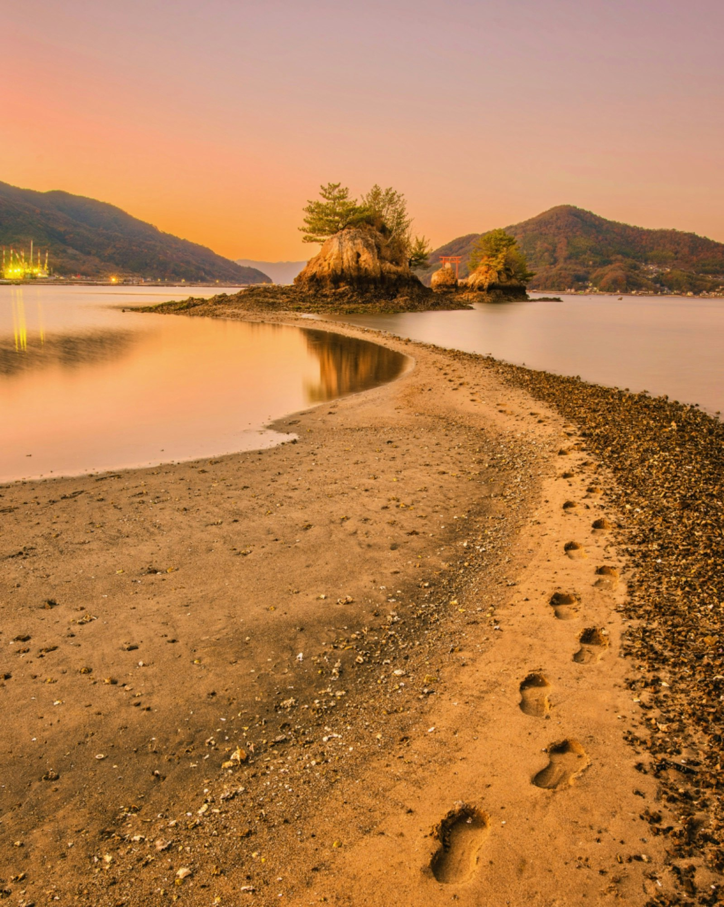

- 
- 


DAYチャーター
1 Day Carter
DAY전세 선박
1日來回包船
久高島、津堅島 日帰りクルージング
1 Day Cruise to Kudaka Island / Tsuken Island
구다카섬/츠켄섬 1일 크루즈
久高島/津堅島 一日遊
与那原マリーナ9時出航、沖縄のブルーの海と爽やかな風に包まれ中城湾を約1時間半のセーリングクルーズ。
ビーチの沖でアンカリング、目の前の海はあなたのプライベートビーチに！シュノーケリング・サップなどお楽しみください。
船からの海水浴は冷えた飲み物に冷房の効いたサロン、綺麗なトイレが使えるのも助かりますよね、まさにラグジュアリーな空間！
大人の海遊びを楽しみながらの船上ランチ、島へ上陸し島内観光や地元のランチを楽しむのも良し、帰りはハンモックネットでゆったりまったり、波と風の音をBGMにインスタ映えした写真のアップタイムです。
マリーナ帰港は16時を予定しております。
８：４５ 与那原マリーナ集合
９：００ 出航
１０：３０ 久高島沖アンカリング～海水浴、シュノーケル、SUPなど海遊び
１２：００ 昼食、昼食後自由時間。（海水浴、シュノーケル、SUPなど海遊び）
１４：３０ 出発～
１６：００ 与那原マリーナ帰港
ラグジュアリーカタマランヨットで唯一少人数に対応した料金設定となっております。
Departing from Yonabaru Marina at 9:00am, the sailing cruise takes about an hour and a half through Nakagusuku Bay, surrounded by Okinawa's blue sea and refreshing breeze.
Anchoring off the coast of the beach, the sea in front of you becomes your private beach! Please enjoy snorkeling and SUP.
Swimming in the sea from the ship is a truly luxurious space with cold drinks, an air-conditioned salon, and a clean restroom.
You can have lunch on the boat while enjoying some fun in the sea for adults, or go ashore and enjoy sightseeing and local lunch on the island.On the way back, you can relax in a hammock net and take some Instagram-worthy photos with the sound of the waves and wind in the background.
On the way back, why not spend a peaceful and serene time in a hammock with the soothing sound of the waves and wind. Now is the perfect time to post some photos of the Instagrammable sunset on your Instagram.
We plan to return to the marina at 4pm.
８：４５ Yonabaru Marina meeting
９：００ Departure
１０：３０ Anchoring off Kudaka Island ~ Sea activities such as swimming, snorkeling, SUP etc.
１２：００ Lunch, free time after lunch. (Sea activities such as swimming, snorkeling, and SUP)
１４：３０ Departure ~
１６：００ Return to Yonabaru Marina
We are the only luxury catamaran yacht with pricing that accommodates small groups.
오전 9시에 요나바루 마리나에서 출발하는 항해 크루즈는 오키나와의 푸른 바다와 상쾌한 바람에 둘러싸인 나카구스쿠만을 통과하는 데 약 1시간 30분이 소요됩니다.
해변 앞바다에서 앵커링, 눈앞의 바다는 당신의 개인 해변에! 스노클링, 팝 등 즐길 수 있습니다.
배로부터의 해수욕은 차가운 음료에 냉방이 효과가 있는 살롱, 깨끗한 화장실을 사용할 수 있는 것도 도움이 되는군요, 바로 럭셔리한 공간!
어른의 바다놀이를 즐기면서의 선상 런치, 섬에 상륙해 섬내 관광이나 현지의 런치를 즐기는 것도 좋고, 돌아오는 것은 해먹 넷으로 느긋하게 느긋하거나, 파도와 바람의 소리를 BGM에 인스타 감성한 사진의 업타임입니다.
마리나 귀항은 16시를 예정하고 있습니다.
８：４５ 요나하라 마리나 집합
９：００ 출항
１０：３０ 쿠다카시마 오키 앵커링~해수욕, 스노클, SUP 등 바다놀이
１２：００ 점심, 점심 후 자유 시간. (해수욕, 스노클링, SUP 등 바다놀이)
１４：３０ 출발～
１６：００ 요나하라 마리나 귀항
우리는 소규모 그룹을 수용할 수 있는 가격을 제공하는 유일한 고급 쌍동선 요트입니다.
航行於上午 9:00 從與那原碼頭出發，航行約一個半小時，穿過中城灣，周圍環繞著沖繩藍色的大海和清爽的微風。
停泊在海灘的海岸邊，眼前的大海就是您的私人海灘！請享受浮潛和SUP。
從船上在海裡游泳是一個真正豪華的空間，有冷飲、空調沙龍和乾淨的衛生間。
您可以在船上享用午餐，同時享受成人的海上樂趣，也可以上岸在島上享受觀光和當地午餐。回程的路上，您可以在吊床上放鬆身心，以海浪和風的聲音為背景，拍一些值得分享到Instagram的照片。
回程的路上，何不在吊床上聆聽海浪和風的舒緩聲音，度過一段寧靜祥和的時光呢？現在是在 Instagram 上發布一些適合 Instagram 的日落照片的最佳時機。
我們計劃16:00返回碼頭。
８：４５ 與那原碼頭集合
９：００ 出發
１０：３０ 久高島拋錨～游泳、浮潛、SUP等海上活動
１２：００ 午餐，午餐後自由活動。 （游泳、浮潛、SUP等海上活動）
１４：３０ 出發~
１６：００ 返回與那原碼頭
我們是唯一一艘價格適合小團體入住的豪華雙體遊艇。
DAYチャーター料金（7時間）
Prices for 1 Day Charter (7 hours)
DAY전세 요금（7시간）
一日行程包船费用（7小時）
| 4名まで | 120,000円（税込） |
| 以降1名 | 30,000円（税込） |
| 定員10名 |
| 4 or less people | ¥120,000 |
| Additional 1 person | ¥30,000 |
| Capacity: Max 10 passengers |
| 4명까지 | 120,000엔 |
| 이후1명 | 30,000엔 |
| 정원10명. |
| 4人 | 120,000日元 含午餐和酒精飲料 |
| 4人之後每加1人加收 | 30,000日元 |
| 最高乘載人數10人 |
ソフトドリンク・昼食・船内に用意してあるアルコール飲料、全て料金に含まれております。
船上パーティー用特別ランチ・オードブル・銘柄指定のアルコール類は別料金にて承ります。
シュノーケリングセット・サップ・他、貸出し無料です。
Soft drinks, lunch, and alcoholic beverages available on board are all included in the price.
Special lunches, hors d'oeuvres, and branded alcoholic beverages for onboard parties are available for an additional fee.
Rental of snorkeling sets, sups, etc. is free.
청량 음료, 점심, 선내에 준비되어 있는 알코올 음료, 모두 요금에 포함되어 있습니다.
선상 파티용 특별 점심・오드불・종목 지정의 알코올류는 별도 요금으로 받습니다.
스노클링 세트, 팝, 기타, 대여 무료입니다.
船上提供的軟性飲料、午餐和酒精飲料均包含在價格中。
為船上聚會提供特殊午餐、開胃小菜和品牌酒精飲料，需額外付費。
浮潛裝備、潛水用品等的租賃是免費的。
半日チャーター料金（3時間）
Half Day Charter(3hours)
| 6月～10月 | |
| 4名まで | 80,000円（税込） |
| 以降1名 | 20,000円（税込） |
| 定員10名 | |
| 11月～5月 | |
| 4名まで | 70,000円（税込） |
| 以降1名 | 17,500円（税込） |
| 定員10名 |
| June～October | |
| 4 or less people | ¥80,000 |
| Additional 1 person | ¥20,000 |
| Capacity: Max 10 passengers | |
| November～May | |
| 4 or less people | ¥70,000 |
| Additional 1 person | ¥17,500 |
| Capacity: Max 10 passengers |
クルージング・セーリングのみとなります！
ソフトドリンク付き・昼食は付きません・海水浴は出来ません。
※天候、天災はともかく、天気が良くても風の影響でクルージングを出来ない場合がございます。
※弊社の判断で出航をキャンセルさせていただくこともありますので予めご了承ください。
その際は代金を全額返金させていただくか、宿泊のみの場合チャーター代金を割引し安全なマリーナ内に係留した船にお泊まりいただくなどの対応をいたします。
※また、クルージング途中の悪天候などにより予定航路の変更をする場合がございますが、このような場合は代金の返金はいたしかねます。
※Not only in the case of bad weather or natural disaster, but there is a case that we cannot set out to sail.
※ We might need to cancel the trip depending on the condition. Thank you in advance for your understanding.In such a case, we refund you in full or you could stay overnight on the yacht moored in a safe marina with a discount price.
※We will not make a refund for changing the route during the trip due to factors such as bad weather.
※기후, 천재는 물론 날씨가 좋아도 바람의 영향으로 크루징 할수 없을 경우가 있습니다.
※폐사의 판단으로 출항을 취소할 경우도 있으므로 양해 바랍니다.
이때는 대금을 전액 돌려드리거나 숙박만의 경우 전세대금을 할인하여 안전한 마리나 내에 계류한 배에 묵으시든 등의 대용을 하겠습니다.
※또한 크루징 도중의 악천후등에 의해 예정 항로를 변경할 경우가 있습니다만 이러한 경우는 대금을 돌려드리지 않습니다.
※為了安全起見，如因不可抗之天氣／自然災害因素，我們將有權利自行取消當天航程。
※即使天氣晴朗，也有一些情況下，我們無法也不能在強風的影響下航行，根據我們的所在地，我們可以自行決定變更或取消您的行程。
在這種情況下，我們將全額退費或僅以住宿的情況下為包船費做折扣。我們可將遊艇停泊在安全的碼頭內僅作為住宿所用。
※另外，如因惡劣天氣影響航程，我們可能會自行改變預定路線，但是，在這種情況下我們不會退費，敬請諒解。